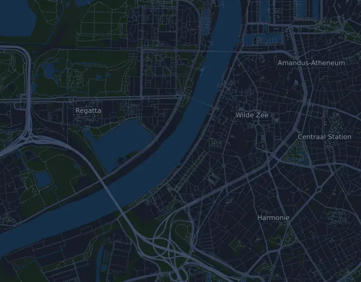

Baloise Antwerp 10 Miles 16 km
- Matka
- 16 km
- Nousumetrit
- ↑ 87 m
- Korkein kohta
- 14 m mpy
- Alusta
- Maantie
- Luonne
- Tasainen
Korkeusprofiili
Valmistaudu Milan kanssa
Mila on juoksuvalmentaja sovelluksessa. Kun lisäät kisan suunnitelmaasi, valmentaja suunnittelee viikot starttiin asti kuntosi mukaan ja antaa sinulle loppuaikaennusteen sekä suunnitelman vauhdista, juomisesta ja energiasta reitillä.

Oikea harjoitus. Oikea päivä.
Reitti

Tietoa reitistä
Baloise Antwerp 10 Miles on 16 km:n maantiejuoksu (Antwerpen, Belgia). Reitillä on nousua 87 m ja laskua 91 m, 5,4 m/km, joten reitti on tasainen. Korkein kohta on 14 m ja matalin −4 m merenpinnan yläpuolella.
Reitillä ei ole yhtenäisiä vähintään 25 nousumetrin nousuja.
Mila-sovelluksessa valmentaja kuvailee reitin tarkasti omalla kielelläsi ja suunnittelee vauhtisi ja energiasi sille.
Vauhtitaulukko
Baloise Antwerp 10 Miles 16 km ajassa 1:15:00 – vauhti kilometrillä ja väliajat
4:41 min/km · km 5: 23:24 · km 10: 46:49 · maali: 1:15:00
Baloise Antwerp 10 Miles 16 km ajassa 1:30:00 – vauhti kilometrillä ja väliajat
5:37 min/km · km 5: 28:05 · km 10: 56:11 · maali: 1:30:00
Baloise Antwerp 10 Miles 16 km ajassa 1:45:00 – vauhti kilometrillä ja väliajat
6:33 min/km · km 5: 32:46 · km 10: 1:05:33 · maali: 1:45:00
Baloise Antwerp 10 Miles 16 km ajassa 2:15:00 – vauhti kilometrillä ja väliajat
8:26 min/km · km 5: 42:08 · km 10: 1:24:16 · maali: 2:15:00
Ajat olettavat tasaisen vauhdin koko matkan. Tämä on pelkkää laskentaa, ei ennuste: mäissä, ruuhkassa ja juomapisteillä vauhti vaihtelee.
Usein kysyttyä
Baloise Antwerp 10 Miles 16 km: milloin kisa juostaan?
Seuraavan kisan päivä ei ole vielä selvillä. Viimeksi kisa juostiin 26. huhtikuuta 2026.
Baloise Antwerp 10 Miles 16 km: kuinka pitkä matka on ja paljonko nousua on?
Matka on 16 km, nousua 87 m ja laskua 91 m. Korkein kohta on 14 m mpy.
Baloise Antwerp 10 Miles 16 km: millainen reitti on?
Reitti on tasainen, nousua keskimäärin 5,4 m kilometrillä. Reitillä ei ole yhtenäisiä vähintään 25 nousumetrin nousuja. Reitti kulkee lähdöstä maaliin, joka on eri paikassa. Alusta on maantietä.
Baloise Antwerp 10 Miles 16 km: miten jaan vauhtini?
Pyri tasaiseen rasitukseen koko matkan, ja jarruttele ensimmäisillä kilometreillä, kun jalat tuntuvat kevyiltä ja muut karkaavat edelle. Reitti on tasainen, joten tasainen vauhti kilometriä kohden toimii hyvin. Milasta saat juuri tälle reitille vauhtisuunnitelman oman kuntosi mukaan.
Lisää samanlaisia kisoja
Lisää kisoja lähellä
- 20 km de Bruxelles30. toukokuuta 2027 · Bruxelles, Belgia
- 101ª Corrida Internacional de São Silvestre 15 km31. joulukuuta 2026 · São Paulo, Brasilia
- 42km du Mont-Blanc (Marathon du Mont-Blanc)27. kesäkuuta 2027 · Chamonix-Mont-Blanc, Ranska
Valmistaudu Milan kanssa
Oikea harjoitus. Oikea päivä.
Tiedot ovat reittitiedostosta ja järjestäjän tiedoista. Tarkista päivä, lähtöajat ja säännöt järjestäjältä.
Mila ei ole yhteydessä järjestäjään eikä kisan sponsoreihin, eivätkä ne sponsoroi tai suosittele Milaa. Nimet ja tavaramerkit kuuluvat omistajilleen. Järjestäjä tai oikeuksien haltija? Pyydä muutosta tai poistoa